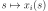
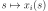

Sensitivity analysis by Fourier decomposition¶
FAST is a sensitivity analysis method which is based upon the ANOVA
decomposition of the variance of the model response
 , the latter being represented by its Fourier
expansion. is an input random
vector of
, the latter being represented by its Fourier
expansion. is an input random
vector of  independent components.
independent components.
 , by defining
parametric curves ,
, by defining
parametric curves ,  exploring the support of the input random vector
exploring the support of the input random vector  .
.Sampling:
Deterministic space-filling paths with random starting points are defined, i.e. each input
 is transformed as follows:
is transformed as follows:where
is the number of input variables.  is the
length of the discretization of the s-space, with varying
in by step of . is a
random phase-shift chosen uniformly in which
enables to make the curves start anywhere within the unit hypercube
. The
selection of the set induces a
part of randomness in the procedure. So it can be asked to realize
the procedure times and then to calculate the arithmetic
means of the results over the estimates. This operation is
called .
is the
length of the discretization of the s-space, with varying
in by step of . is a
random phase-shift chosen uniformly in which
enables to make the curves start anywhere within the unit hypercube
. The
selection of the set induces a
part of randomness in the procedure. So it can be asked to realize
the procedure times and then to calculate the arithmetic
means of the results over the estimates. This operation is
called .is a set of integer frequencies assigned to each input
. The frequency
associated with the input of interest is set to the maximum
admissible frequency satisfying the Nyquist criterion (which ensures
to avoid aliasing effects):with
 the interference factor usually equal to 4 or higher.
It corresponds to the truncation level of the Fourier series, i.e.
the number of harmonics that are retained in the decomposition
realized in the third step of the procedure.
the interference factor usually equal to 4 or higher.
It corresponds to the truncation level of the Fourier series, i.e.
the number of harmonics that are retained in the decomposition
realized in the third step of the procedure.In the paper [saltelli1999], for high sample size, it is suggested that .
And the maximum frequency of the complementary set of frequencies is:
with the index ’’ which meaning ’all but
 ’.
’.The other frequencies are distributed uniformly between
 and
. The set of frequencies is the same
whatever the number of resamplings is.
and
. The set of frequencies is the same
whatever the number of resamplings is.Let us make an example with eight input factors, and i.e. and with
the
index of the input of interest.When computing the sensitivity indices for the first input, the considered set of frequencies is : .When computing the sensitivity indices for the second input, the considered set of frequencies is : .etc.The transformation defined above provides a uniformly distributed sample for the oscillating between
 and . In order to take into account the
real distributions of the inputs, we apply an isoprobabilistic
transformation on each
and . In order to take into account the
real distributions of the inputs, we apply an isoprobabilistic
transformation on each  before the next step of the
procedure.
before the next step of the
procedure.Simulations:
Output is computed such as:
Then is expanded onto a Fourier series:
where and are Fourier coefficients defined as follows:
These coefficients are estimated thanks to the following discrete formulations:
Estimations by frequency analysis:
The first order indices are estimated as follows:
where is the total variance and the portion of
 arising from the uncertainty of the
arising from the uncertainty of the
 input. the size of the sample using to
compute the Fourier series and is the interference factor.
Saltelli et al. (1999) recommended to set to a value in the
range .
input. the size of the sample using to
compute the Fourier series and is the interference factor.
Saltelli et al. (1999) recommended to set to a value in the
range .The total order indices are estimated as follows:
where is the part of the variance due to all the inputs except the
input.
API:
See
FAST
Examples:
References: